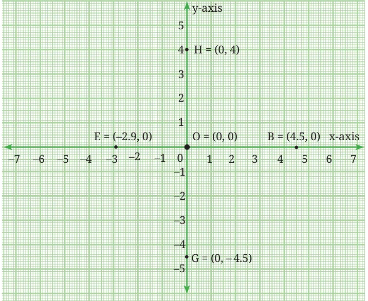

In the chapters on integers, rational numbers, and decimals in earlier grades, you studied the number line which is one-dimensional. The two-dimensional coordinate system uses two lines at right angles to each other to mark points in two-dimensional space (short form: 2-D space). For convenience, we consider one of the lines to be horizontal; it is called the x-axis. The other line is vertical; it is called the y-axis. The point of intersection of the x-axis and y-axis is called the origin O; its coordinates are (0, 0). Coordinate axes (this is the plural of ‘axis’) help us to locate any point in 2-D space using the point’s ‘coordinates’. Distances from O are marked off in equal units, on both the axes. Distances to the right of O or upwards from O are considered positive, and distances to the left of O or downwards from O are considered negative (Fig. 1.2).

Point B is on the x-axis and 4.5 units to the right of O, its coordinates are (4.5, 0). This fact is written as \(B = (4.5\), 0). Point G is on the y-axis and 4.5 units downward from O, its coordinates are (0, \(- 4.5)\), that is, \(G = (0\), \(- 4.5)\). Point H is also on the y-axis but 4 units above O, its coordinates are (0, 4), that is, \(H = (0\), 4). A point \(P =\) (x, 0) lies on the x-axis. If x is positive, then P lies to the right of O. If x is negative, P lies to the left of O. A point \(P = (0\), y) lies on the y-axis. If y is positive, P lies above O; if y is negative, P lies below O. While writing the coordinates of a point, it is often convenient to drop the ‘=’ sign and write \(P =\) (x, y) simply as P (x, y). This is especially true while marking points on a graph.
Fig. 1.3 shows Reiaan’s room with points OABC marking its corners. The x- and y-axes are marked in the figure. Point O is the origin.